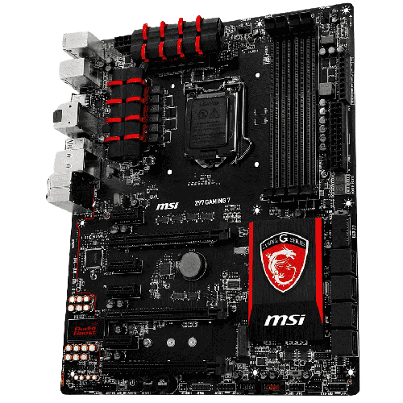

Informacion general
Todos de pie para recibir al rey indiscutido de los juegos. Tres nuevos procesadores AMD Ryzen serie 7000 con tecnología AMD 3D V-Cache™, para recibir una inyección de rendimiento de juego masiva. Con el lanzamiento de los nuevos Ryzen 9 7950X3D y Ryzen 9 7900X3D, AMD combina sus procesadores tope de gama con hasta 144 MB de memoria en el chip.
LGA 2066
CPU eficiente con socket 2066 que integra 14 núcleos y 28 subprocesos, alcanzando una frecuencia máxima de 4.60 Ghz

LGA 1151
Socket compatible con microprocesadores Intel que tiene dos versiones distintas: la primera revisión soporta CPUs Intel Skylake y KabyLake, y la segunda revisión soporta CPU CoffeeLake exclusivamente.
T-Force DELTA RGB DDR4 16GB 3200MHZ
Está fabricado con un material metálico más ligero y más delgado. El diseño de la “R” hueca es altamente estereoscópico y hace juego con el área luminosa ultra gran angular.

TUF GAMING B560M-E
Toma todos los elementos esenciales de los últimos procesadores Intel® y los combina con funciones listas para jugar y durabilidad comprobada. Diseñado con componentes de grado militar